د-1
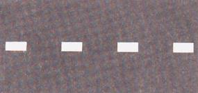خط متقطع : خط محور الشارع أو خط مسلك على من يسوق مركبة أو حيوان أن يسوق مركبته أو الحيوان في المسلك الأيمن الأقصى ولا يجوز له عبور الخط بجسم المركبة أو بقسمٍ منه إلا من اجل التجاوز أو من اجل تنفيذ أمرٍ قانوني
د-2
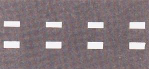خطوط متقاطعة متوازية : خطوط مسلك في شارع ذو ثلاثة مسالك أو اكثر - على من يسوق مركبة أو حيوان أن يسوق مركبته أو الحيوان في المسلك الأيمن الأقصى ولا يجوز له عبور الخطوط بجسم المركبة أو بقسمٍ منه إلا من اجل التجاوز أو من اجل تنفيذ أمرٍ قانوني
د-3
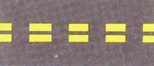خط متقطع مزدوج باللون الأصفر ويُستعمل لوسم مسلك للمواصلات العمومية : يجوز السفر في المسلك للمركبات المذكورة في الشاخصة ب-35
د-4
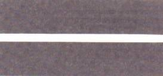خط فاصل متواصل : إذا وُسم الشارع بخط فاصل متواصل فعلى السائق أن يسوق مركبته أو يقود الحيوان على الجانب الأيمن للخط ولا يجوز له عبور الخط بجسم المركبة أو بقسمٍ منه
د-5
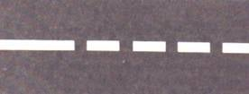خط متقطع متراص (خط توجيه) : يشير إلى ظهور خط فاصل متواصل ، على سائق المركبة التوجه بمركبته إلى المسلك الأيمن قبل بداية الخط الفاصل المتواصل
د-6
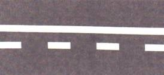خط متقطع بجانب خط فاصل متواصل : يجوز اختراق الخطوط إذا كان الخط المتقطع على يمين الخط الفاصل المتواصل وإذا كانت الطريق خالية .
د-7
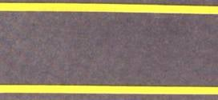خط حدود : يشير الخط إلى حافة الشارع في المكان التي لا توجد فيه أحجار حافة . على سائق المركبة الميكانيكية أن يسوق مركبته على الجانب الأيسر للخط ولا يجوز له العبور إلى يمين الخط إلا من اجل منع وقوع حادث أو منع عرقلة لحركة السير
د-8
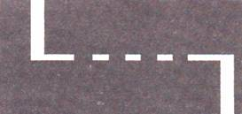خط توقف : مكان توقف المركبة أو الحيوان (قبل الخط وقريباً منه) عندما يكون هناك واجب التوقف .
د-9
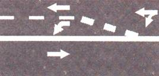خط مستطيلات : يشير إلى تغيير وجهة المسلك وذلك للاستدارة إلى اليمين أو إلى اليسار فقط .
د-10
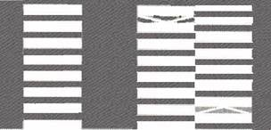مكان عبور للمشاة : إذا قُسِّم مكان العبور إلى قسمين ، فعلى الماشي أن يعبر من القسم الأيمن لمكان العبور .
د-12
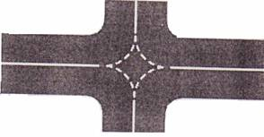خطوط توجيه للاستدارة في المفترقات (خطوط متقطعة أو أزرار)
د-13
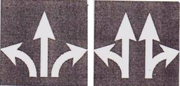أسهم للسير في المفترق يجوز عبور المفترق من المسلك الموسوم بالسهم فقط باتجاه السهم .
د-14
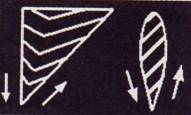جزر سير (بأشكال مختلفة) ، موسومة على الشارع . لا يجوز لسائق المركبة أو الحيوان السير أو الوقوف عليها .
د-15
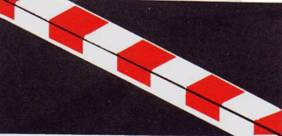أحجار حافة مصبوغة باللون الأحمر والأبيض ممنوع التوقف أو الوقوف في الشارع إلا لتنفيذ أمر قانوني
د-16
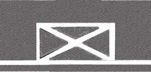مكان ممنوع الوقوف عليه : ممنوع الوقوف داخل المساحة الموسومة على سطح الشارع.
د-17
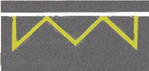مكان توقف لأنواع معينة من المركبات في المكان الذي لا يوجد فيه خليج : لا يجوز توقف مركبة في المساحة المستطيلة التي يشكلها طول حافة الشارع وعرض الوسم ، إلا إذا كانت المركبة من النوع الذي أُقيمت له شاخصة (محطة باص ، صالون عمومي وما شابه ذلك) من اجل إنزال واصعاد الركاب فقط
د-18
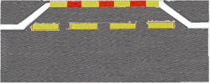مكان توقف لأنواع معينة من المركبات في المكان الذي يوجد فيه خليج لهذا الغرض : لا يجوز توقف مركبة داخل الخليج أو بجانب الخط المتقطع. يجوز توقف مركبة من اجل إنزال أو اصعاد الركاب فقط في داخل الخليج إذا كانت المركبة من النوع الذي ذُكر بأنه يُسمح له بالتوقف بواسطة شاخصة .
د-20
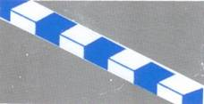أحجار حافة مصبوغة بالأزرق بالتناوب يجوز الوقوف على الشارع بجانب أحجار الحافة بواسطة بطاقات وقوف
د-21
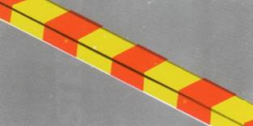أحجار حافة مصبوغة بالأحمر والأصفر : ممنوع التوقف إلا لأنواع المركبات التي سُمح بتوقفها بواسطة شاخصة (محطة باص يعمل على خط خدمة ، محطة صالون عمومي ، محطة لنقل الجنود) .